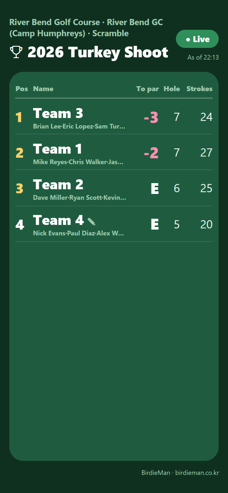
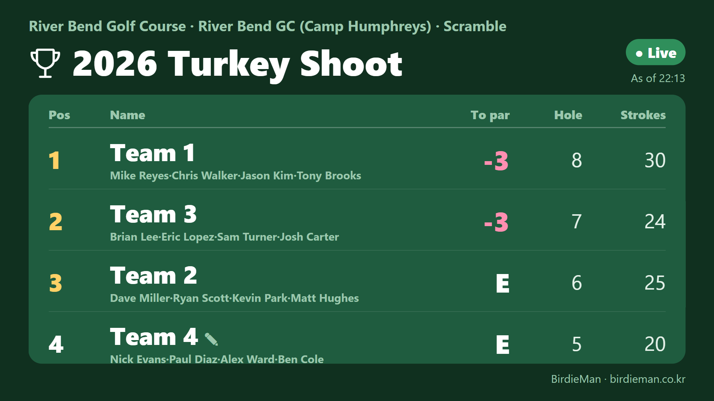
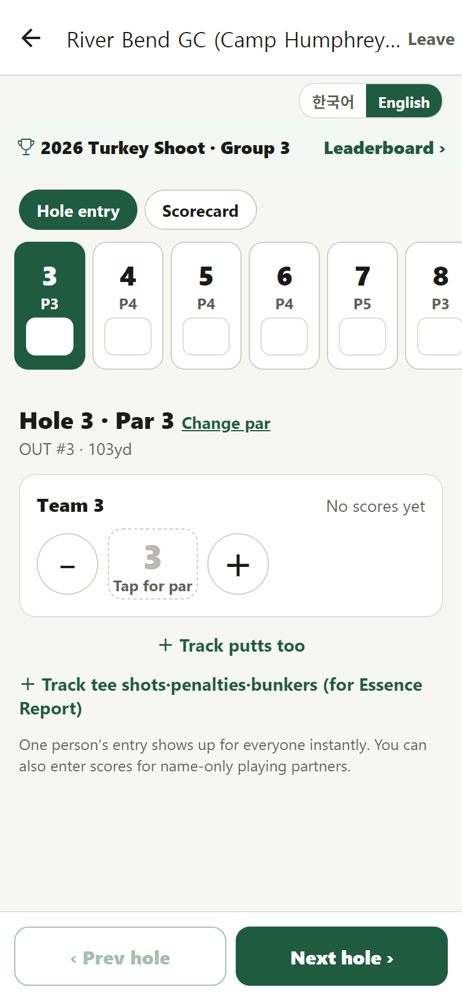

A fairer, faster Turkey Shoot
Live, public scoring for the 2026 Turkey Shoot, run alongside the paper scorecards. Free, no app or sign-up for players, and we set it up with you.
What players are telling us
“That score can't be right.”
Friends pair up, report scores nobody else saw, and win the prizes and cash. More and more golfers are skipping tournaments because of it, at River Bend and at Osan too.
Nobody knows where they stand
Until the cards are turned in, no team knows if it's in the hunt. And because each card stays private until it's submitted, it's easy to fudge.
Tallying takes time, and people make mistakes
After 18 holes, staff collect the cards, rank the teams and pick the winners by hand while dinner waits.
How BirdieMan fixes it
Every score is public, hole by hole
Each team's score goes up the moment it's entered, and every player can see it live on their own smartphone. It's hard to write down a birdie nobody cheered for.
Changes leave a mark
If a score is changed, the team shows ✎ on the leaderboard. If several holes are entered at once afterwards, it shows ⏱. Everyone sees it.
Live standings on every phone
Teams see their position after every hole, and the board flashes for every birdie or eagle. Players stay in the game.
Results the moment play ends
Rankings, Closest to Pin, Longest Drive and the raffle draw are ready when the last team finishes, so awards can start with dinner.




The pilot
| What | How |
|---|---|
| Paper scorecards | Stay exactly as they are. Nothing about your official process changes. BirdieMan runs next to it, and afterwards you can compare the two. |
| Cost | Free. No contract, no payment. |
| Players | One person per team keeps score on their phone. No app download and no sign-up: they open a link and tap their name. English and Korean. |
| Setup | About 10 minutes using the Organizer guide, or we set it up with you. Paste the team list from Excel and it's done. |
| Format | Scramble with a shotgun start. Each team's scorecard starts on its own hole. |
| Course data | River Bend GC is already in the app: pars and yardages from the official scorecard. |
Tournament day


After the pilot
If it works for you, we'd love to keep it going for next year's tournaments, and to put a QR poster in the pro shop so golfers can keep score with BirdieMan on any regular round. Both are free.
Pages for you: Organizer guide · Player instructions (English / 한국어) · Pro shop posters
Contact
Donghyun Cho (조동현) · Member No. 470556
Phone: 010-2707-0775 · Email: donghyun@sweetly.co.kr
BirdieMan · Oprai · birdieman.co.kr